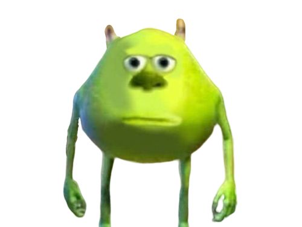

Les mèmes (ou memes en anglais) sont des éléments culturels viraux qui se répandent d'une personne à une autre au sein d'une culture. Le terme a été introduit par le biologiste évolutionniste Richard Dawkins dans son livre de 1976, "The Selfish Gene", où il décrivait les mèmes comme des unités d'information culturelle qui se répliquent et évoluent de manière similaire aux gènes biologiques.
1. Concept initial (années 1970) :
Richard Dawkins a utilisé le mot "mème" pour décrire comment des idées, des comportements et des styles se propagent au sein d'une culture. Il a combiné le mot grec "mimeme" (quelque chose imité) avec "gène", pour illustrer cette idée.
2. Mèmes avant Internet :
Avant l'ère d'Internet, les mèmes prenaient souvent la forme de blagues, de rumeurs, de chansons ou de modes, qui se diffusaient à travers des interactions sociales, des médias imprimés ou des émissions de télévision.
3. Mèmes sur Internet (années 1990-2000) :
Avec l'essor d'Internet dans les années 1990 et 2000, les mèmes ont trouvé un nouveau terrain de jeu. Des images, des vidéos et des textes humoristiques pouvaient désormais être partagés rapidement et facilement.
Des sites comme 4chan, Reddit, et des plateformes de médias sociaux comme Facebook et Twitter ont joué un rôle crucial dans la diffusion des mèmes.
Exemples célèbres : "Dancing Baby", "All Your Base Are Belong To Us", et "Rickrolling".
4. Explosion des mèmes (années 2010) :
L'évolution des médias sociaux a accéléré la création et la propagation des mèmes. Les plateformes comme Instagram, TikTok, et même les messageries instantanées comme WhatsApp et Messenger sont devenues des vecteurs importants.
Exemples : "Grumpy Cat", "Distracted Boyfriend", et "Woman Yelling at a Cat".

5. Mèmes contemporains :
Les mèmes modernes couvrent une variété de formes, incluant des images, des vidéos courtes, des GIFs, et même des formats textuels comme les tweets. Ils peuvent être humoristiques, informatifs, politiques, ou même servir de critiques sociales.
Des communautés en ligne se spécialisent dans la création et la diffusion de mèmes, ajoutant à l'évolution rapide et à la diversité des mèmes.
Les mèmes sont devenus un élément central de la culture numérique moderne. Leur capacité à capturer et à transmettre des idées de manière concise et souvent humoristique les rend particulièrement adaptés à l'ère de l'information rapide et des réseaux sociaux. Ils continuent d'évoluer et de refléter les tendances, les préoccupations et les sensibilités culturelles de notre époque. Si vous souhaitez en apprendre plus sur le sujet consulter l'article du journal LE MONDE a ce sujet .